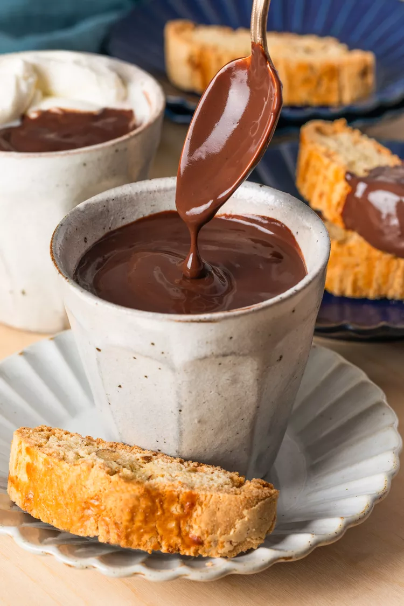

Cioccolata Calda

It’s so rich and thick it’s almost like drinking a mug of pudding.
Ingredients
- 1/4 cup unsweetened cocoa powder
- 2 tablespoons cornstarch
- Salt: A pinch of salt enhances the overall flavor, but it won't make the loaf taste salty.\
- 2 cups whole milk, plus more as needed
- 1/4 cup granulated sugar
- 3 ounces 70% dark chocolate, chopped
Steps
- Combine the cocoa powder and cornstarch: Whisk together the cocoa powder and cornstarch in a medium bowl until well-mixed.
- Heat the milk and sugar: Add the milk and the sugar to a medium saucepan and heat over medium heat, whisking occasionally, until the sugar has melted and the milk just starts to steam (roughly 160°F), 3 to 4 minutes.
- Add the milk: Remove the saucepan from the heat and pour a little of the hot milk into the cocoa-cornstarch mixture, whisking until you have a uniform paste. Slowly pour the rest of the milk in, bit by bit, whisking constantly to keep the mixture uniform. Add the chopped chocolate to the bowl, make sure it’s submerged, and let it sit until it melts, about 1 minute. Whisk it into the mixture.
- Return to the heat: Return the mixture to the saucepan over medium heat, whisking frequently, until the mixture just starts to bubble, about 3 minutes (this will start to activate the cornstarch). Continue cooking, whisking constantly (especially around the bubbling edges), until the mixture has thickened slightly—the bubbles will suddenly look much bigger and thicker. Turn off the heat, but continue whisking for another minute as the residual heat helps the mixture continue to thicken.
- Serve: Divide the hot chocolate between 4 small mugs. Serve as is or—if the chocolate has thickened significantly—use a microwave or the steam wand of an espresso machine to heat another 1/2 cup milk until it’s lukewarm, then stir as much milk as desired into each mug to thin the hot chocolate to your preferred consistency. In the unlikely event that you have any leftover, refrigerate it with a piece of plastic wrap pressed onto the top so that it doesn’t develop a film. You can enjoy it as a cold pudding or, if you want to reheat it, whisk in enough milk to make the mixture fluid again then reheat it in the microwave in 20 to 30-second intervals, making sure it doesn’t become so hot that it starts to bubble over.